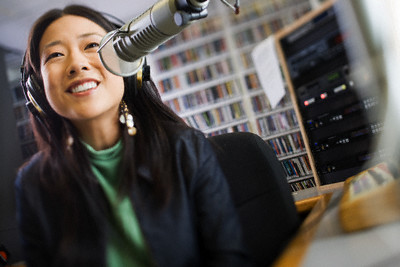

SHOWS

Ken Jenkins brings us behind the scenes in college life. Weekly, Ken interviews different school organizations across the country to share with us the latest hip activities. The show employs streaming Skype connections from different colleges. Ken is has a Social Arts degree specifically on college interactivity, surely his expertise will bring out the best in this show.

Louise Chandler reviews the latest hip books in the market today. Louise, who is an accomplished writer herself having written three bestsellers, takes us through the important facets of each book she reviews. You will be amazed at how she can open up prose for us to understand and appreciate even more. J.K. Rowling calls her the Harry Potteress of fantasy.

Iyo Yamada takes us around the city one restaurant at a time. Most of the time she reviews places that are worth mentioning, but in some rare occasion she brings to the studio special guests and chefs of these gastronomic establishments for an interview.Finishing her culinary degree at Fountain Bleu in Paris, Iyo has her
own very well attended restaurant called The Goose Station which serves everything goose.

Cig Sandder is big on paranormal, psychic, and just plain weird phenomena and makes him the best person to host this show about everything peculiar. Cig comes from several generations of UFO hunters and debunkers. It was his father who proved that crop circles were faked and propelled their family to international fame. In his show, Cig accepts phone calls which should make for very interesting entertainment for late owls.
Franz Yanez hosts this show about love and love problems. The first hour of the show is devoted to answering emails and letters; while the second hour (or whatever is left of the show) is dedicated to phone in questions. Having worked five years in clinical psychology, Franz has been helping people with relationship problems. No concern is too obscure nor unimportant for her. Even if you don’t have a concern, just listening in will warm your heart.

Louise Chandler and her crew of helicopters updates you with the latest traffic flow in the city. For the .past ten years, Louise has been giving helpful traffic advice and alternatives. A group of helicopters fly around the city to aid in bringing you up-to-the-second information.